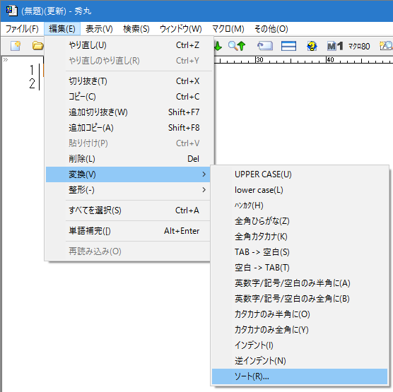
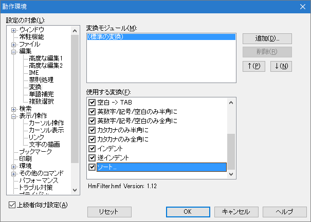

- 行をソートすることは出来ませんか？

秀丸エディタ Ver 5.00から変換モジュールが導入され、 Ver 8.00からは、ソートが標準添付の変換モジュールに組み込まれています。
メニューの「編集→変換」に「ソート」がない場合は、「動作環境」から設定を行う必要があります。

変換モジュールの設定は、メニューの「その他→動作環境」で動作環境を開き、 「編集」→「変換」から“(標準の変換)”を選択し、「使用する変換」のソートにチェックを入れます。

変換モジュールに関しては、「第II部〜知っていると便利な秀丸の機能 変換モジュール」を参照してください。